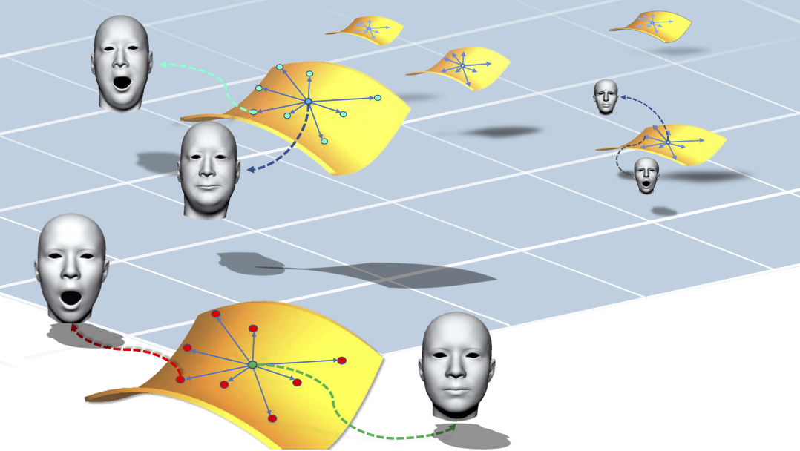

Qianyi Wu is currently a researcher at SenseTime.
Qianyi graduated from Graphics and Geometric Computing Laboratory of School of Mathematical Sciences at University of Science and Technology of China (USTC) in 2019, under the supervision of Prof. Juyong Zhang. He obtained his Bachelor’s degree from Special Class for the Gifted Youth of USTC in 2016.
He spent one year as research intern at Nanyang Technological University, mentored by Prof. Jianfei Cai and Prof. Jianmin Zheng.
He will join Monash University as a PhD student.
News
2020.03: I decide to pursue a PhD degree at Monash Univerisity. Cheer up!
2019.07: Join SenseTime (Beijing) as a full-time researcher.
2019.02: One paper was accepted by CVPR 2019.
2018.01: One paper was accepted by CVPR 2018 as spotlight .
2017.08: Research Intern at Nanyang Techonology University, Singapore.
Publications

Disentangled Representation Learning for 3D Face Shape Zi-Hang Jiang, Qianyi Wu, Keyu Chen, Juyong Zhang
IEEE Conference on Computer Vision and Pattern Recognition (CVPR), 2019 [PDF][Code]